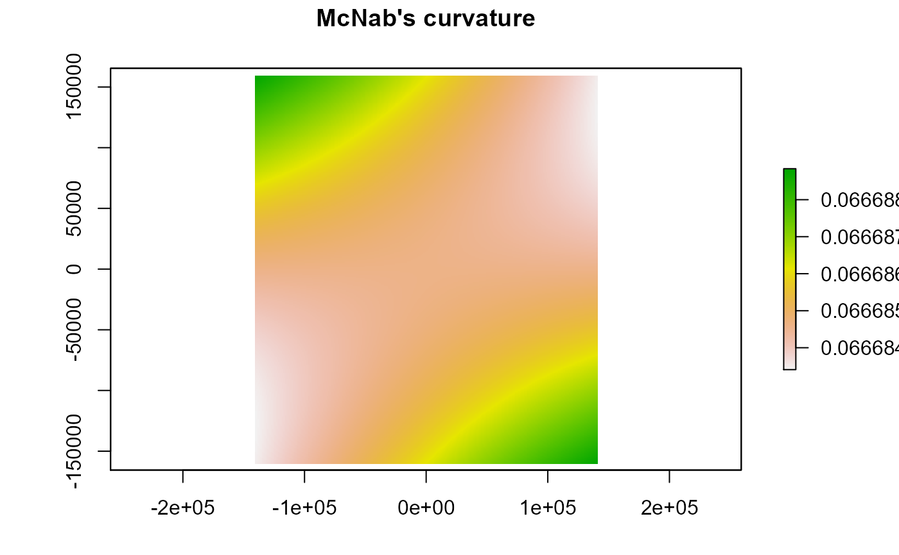

Calculates Zevenbergen & Thorne, McNab's or Bolstad's curvature
curvature(x, type = c("planform", "profile", "total", "mcnab", "bolstad"), ...)
| x | rasterLayer object |
|---|---|
| type | Method used c("planform", "profile", "total", "mcnab", "bolstad") |
| ... | Additional arguments passed to writeRaster |
raster class object of surface curvature
The planform and profile curvatures are the second derivative(s) of the elevation surface, or the slope of the slope. Profile curvature is in the direction of the maximum slope, and the planform curvature is perpendicular to the direction of the maximum slope. Negative values in the profile curvature indicate the surface is upwardly convex whereas, positive values indicate that the surface is upwardly concave. Positive values in the planform curvature indicate an that the surface is laterally convex whereas, negative values indicate that the surface is laterally concave.
Total curvature is the sigma of the profile and planform curvatures. A value of 0 in profile, planform or total curvature, indicates the surface is flat. The planform, profile and total curvatures are derived using Zevenbergen & Thorne (1987) via a quadratic equation fit to eight neighbors as such, the s (focal window size) argument is ignored.
McNab's and Bolstad's variants of the surface curvature (concavity/convexity) index (McNab 1993; Bolstad & Lillesand 1992; McNab 1989). The index is based on features that confine the view from the center of a 3x3 window. In the Bolstad equation, edge correction is addressed by dividing by the radius distance to the outermost cell (36.2m).
Bolstad, P.V., and T.M. Lillesand (1992). Improved classification of forest vegetation in northern Wisconsin through a rule-based combination of soils, terrain, and Landsat TM data. Forest Science. 38(1):5-20.
Florinsky, I.V. (1998). Accuracy of Local Topographic Variables Derived from Digital Elevation Models. International Journal of Geographical Information Science, 12(1):47-62.
McNab, H.W. (1989). Terrain shape index: quantifying effect of minor landforms on tree height. Forest Science. 35(1):91-104.
McNab, H.W. (1993). A topographic index to quantify the effect of mesoscale landform on site productivity. Canadian Journal of Forest Research. 23:1100-1107.
Zevenbergen, L.W. & C.R. Thorne (1987). Quantitative Analysis of Land Surface Topography. Earth Surface Processes and Landforms, 12:47-56.
writeRaster For additional ... arguments passed to writeRaster
Jeffrey S. Evans <jeffrey_evans@tnc.org>
# \donttest{ library(raster) library(spatialEco) data(elev) elev <- projectRaster(elev, crs="+proj=robin +datum=WGS84", res=1000, method='bilinear')#> Warning: CRS object has no comment#> Warning: CRS object has no comment#> Warning: Using PROJ not WKT2 strings#> Warning: Using PROJ not WKT2 stringscurvature(elev, type="planform")#> class : RasterLayer #> dimensions : 331, 293, 96983 (nrow, ncol, ncell) #> resolution : 1000, 1000 (x, y) #> extent : -146715.1, 146284.9, -165572.1, 165427.9 (xmin, xmax, ymin, ymax) #> crs : +proj=robin +lon_0=0 +x_0=0 +y_0=0 +datum=WGS84 +units=m +no_defs #> source : memory #> names : layer #> values : 0, 0 (min, max) #># }